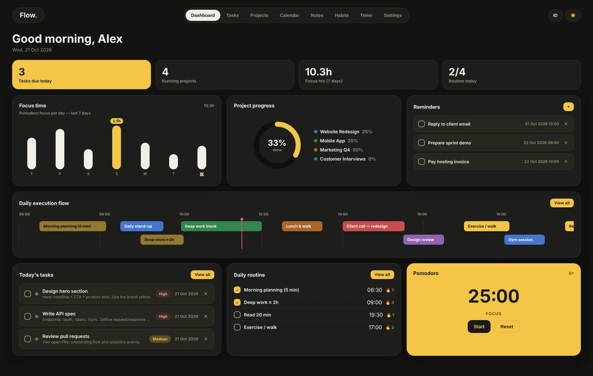
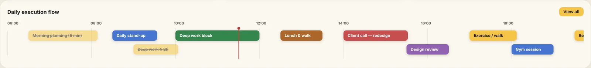
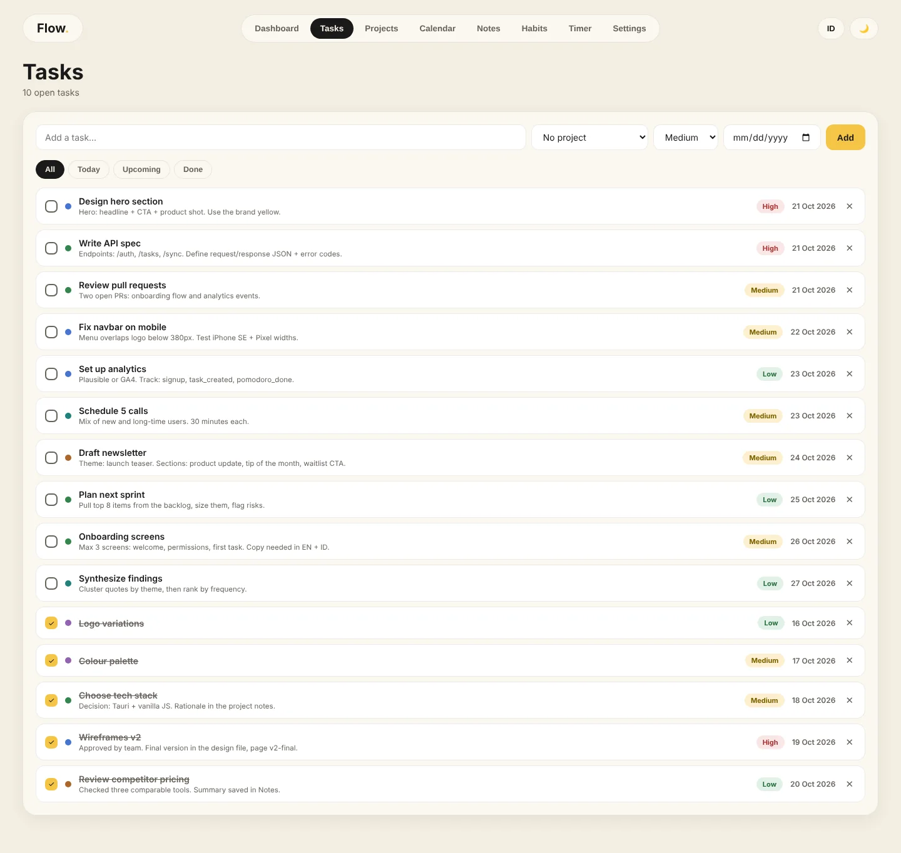
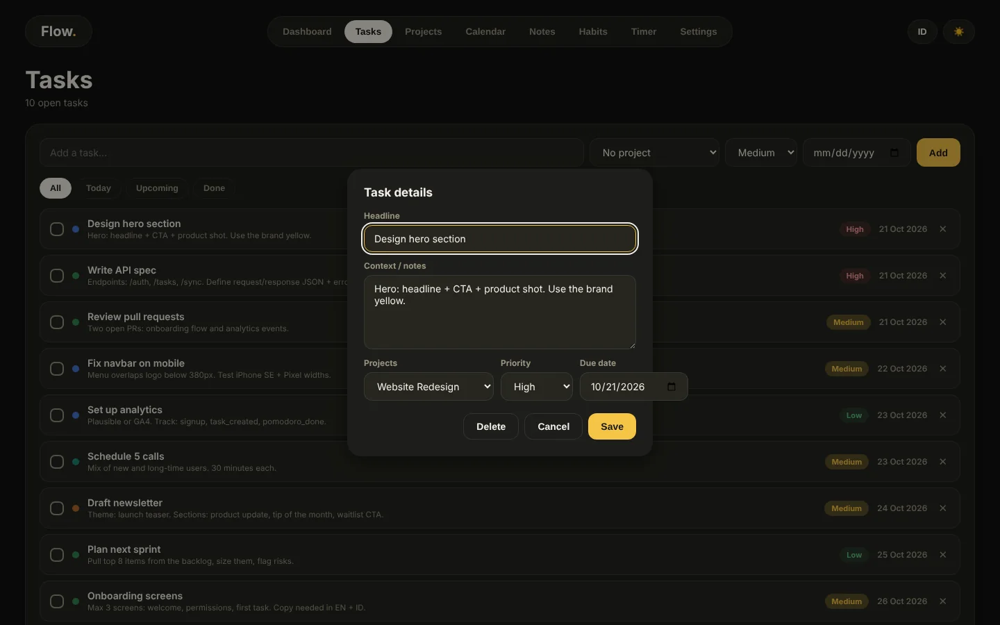
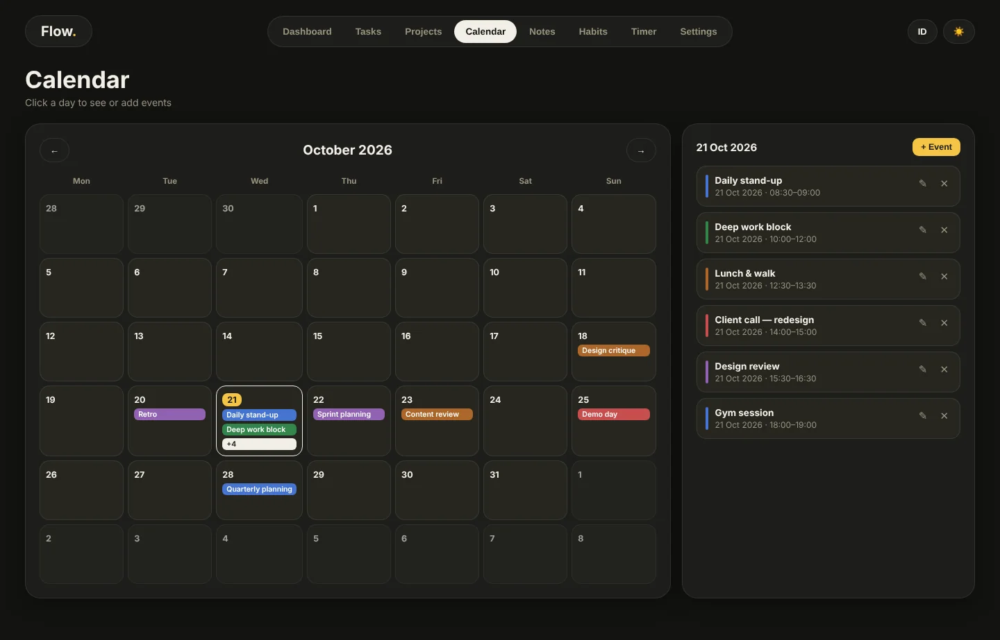
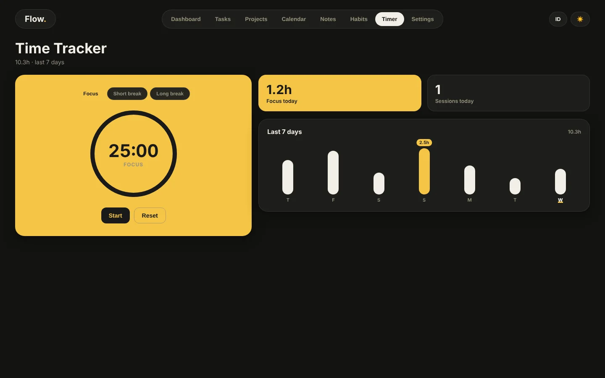
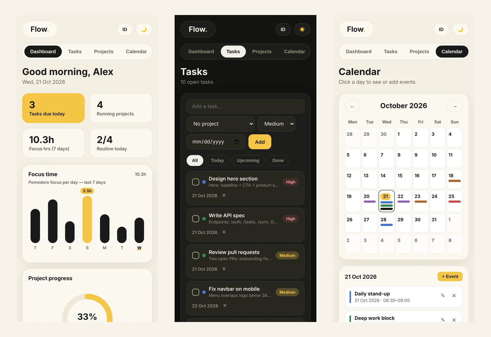

Project 06 · Productivity · Built with AI
Flow Dashboard
One screen that answers a simple question: what does my day actually look like? Tasks, calendar, habits and a focus timer, built around a timeline of the whole day. It runs in the browser with no account, and there is a 5 MB app for Mac.
A productivity dashboard that puts your whole day on one timeline: calendar events, timed habits, tasks and a focus timer.
A to do list shows tasks, not time. It never tells you if the day actually fits.
A day timeline from 06:00 to 22:00, tasks, calendar, habits and a pomodoro timer, in English and Indonesian.
Runs in the browser with no account and no server, plus a small app for Mac.
By 2026 my days were full: research work, the family shop, learning AI and building these tools. A plain to do list was not enough. I needed to see the whole day on one screen, with time blocks, habits and a timer, so I could tell early if a day was overbooked.
Flow Dashboard is the tool I built for that, and it is also the project where I learned to check a build properly before calling it done.
Don't just read about it. Try it.
A limited version of the app runs right here, inside this page, on dummy data. Click to start, or switch to phone view to see the mobile layout.

Tick off a routine on the dashboard and watch the progress ring move.
Open the timeline: events and timed habits from 06:00 to 22:00, with a line that marks the current time.
Start the pomodoro timer, then switch the language to ID.
The parts that matter.
The day on one line
A timeline from 06:00 to 22:00 of events and timed habits, with a moving line for the current time and lanes that never overlap.
Your data stays with you
No server, no account, no network calls. Imported files are cleaned before they are shown, and demo data is stored separately.
Checked before release
A timer based on timestamps so it never drifts, correct rollover at midnight, recovery from broken data, and 35 automated checks.
A closer look.






All screens show demo mode with fictional data. Drag, scroll or use the arrows. Click a screen to enlarge.
Designed and directed by me. Code written with AI.
I don't have a coding background. I learned to build by directing AI: I decide what the tool must do, write the specs and the rules, review every change and test it until it works. Claude and other AI tools write the code.
- Specs and rules written before any code
- Every change checked in the browser before it stays
- Secrets, personal data and real accounts removed before publishing
Clean code, no keys inside.
The repository has the code, a README and notes on how it is built. It contains no API keys, accounts or personal data, and it starts in demo mode with dummy data.